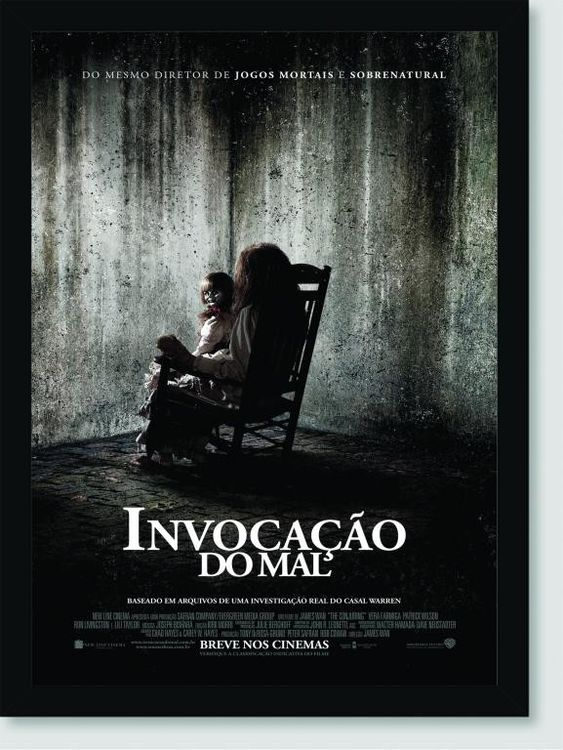

|  | Invocação do Mal
Direção: James Wan
Roteiro Chad Hayes, Carey W. Hayes
Elenco: Vera Farmiga, Patrick Wilson, Ron Livingston
Harrisville, Estados Unidos. Um casal (Ron Livinston e Lili Taylor) muda para uma casa nova ao lado de suas cinco filhas. Inexplicavelmente, estranhos acontecimentos começam a assustar as crianças, o pai e, principalmente, a mãe. Preocupada com algumas manchas que aparecem em seu corpo e com uma sequência de sustos que levou, ela decide procurar um famoso casal de investigadores paranormais (Patrick Wilson e Vera Farmiga), mas eles não aceitam o convite, acreditando ser somente mais um engano de pessoas apavoradas com canos que fazem barulhos durante a noite ou coisas do gênero. Porém, quando eles aceitam fazer uma visita ao local, descobrem que algo muito poderoso e do mal reside ali. Agora, eles precisam descobrir o que é e o porquê daquilo tudo acontecendo com os membros daquela família. É quando o passado começa a revelar uma entidade demoníaca querendo continuar sua trajetória de maldades. |
|
Acesse mais em YouTube SESSÕES
|